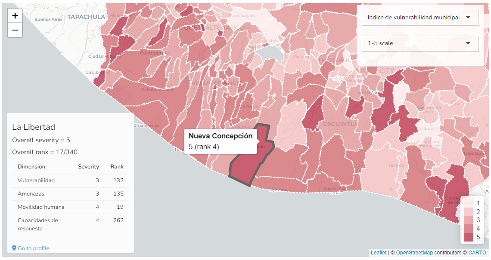

6 Exploring results
The results tab allows you to explore the results of the index, as maps, tables and bar charts. It also gives the option to select different scenarios.
6.1 Calculation of results
When you first click on the Results tab, behind the scenes the app runs a series of calculations which result in the index scores, and all the other aggregate scores. This is done automatically so there is no need for any user input. The calculation follows recognised international methodology1, and the steps are as follows:
- Treat any outliers
- Normalise indicators onto a 1-100 scale
- Aggregate using the weighted arithmetic mean, using the weights specified in your input spreadsheet.
Note that the aggregate scores are scaled in two different ways: either using the 1-100 scale, or they are rescaled onto a categorical 1-5 scale. Both scales can be viewed in the app. The detailed explanation of these steps is left for Chapter 11 and Chapter 12.
6.2 Map and table

In the main “Results” box, the top level of the index is plotted on the map, with colour shading representing the index scores. The map is interactive, allowing you to pan and zoom using by clicking and dragging, or scrolling with the mouse wheel.
Hovering over each region gives further details about the region, including its score and rank. Clicking on a region will open a box in the bottom left with more details, including its scores and ranks for the aggregation level below the index, as well as its overall score and rank. Clicking on the “Go to profile” link here will go to an even more detailed profile of that region, which is explained later in Chapter 7.
You can change which indicator or aggregate is plotted on the map using the uppermost dropdown menu in the top right of this box. You can also select whether to view the scores as a 1-5 (categorical) scale or on the 1-100 scale (raw values at the indicator level).
The map is downloadable in various formats by selecting the file format (either png, jpeg, pdf or html) and clicking the “download map” link. Capturing the map images is unfortunately not perfect and you may have to experiment a little to get the best results. An alternative, which can offer more control, may be to download the map as an HTML file, then open it in a separate tab, and save the image there using the “print to pdf” functionality in your browser, or to simply take a screenshot (in the latter case, you can maximise the window with F11 and take a screenshot of the full window using Windows’ “snipping” tool, for example).
In the same “Results” box you can also select the “Table” tab to see the results as a table.
The table is colour-formatted to help highlight high and low values. The table rows are sorted by the highest index score downwards, and the columns are sorted from the highest level downwards. You can sort the table by different columns by clicking on the column headers, and search for particular units using the search box.
6.3 Bar chart
Underneath the Results box, there is a bar chart of the same indicator/aggregate shown on the map. Use the “gear” icon in the top right for more options: by default only the top 50 regions are shown but you can select the bottom 50, or all. The checkbox selects whether to break down scores into their components on the bar chart - these are the underlying indicators aggregates at the level immediately below. Clicking on a bar here will also give details about that region in the box in the bottom left of the map.
6.4 Scenarios
By default the index is calculated using the arithmetic mean, which implies that low (high) scores in one indicator are perfectly compensated by high (low) scores in another. Optionally, select “Scenario 2” which uses the geometric mean: in this case lower scores in one indicator are less compensated by higher scores in others. Click “Recalculate” to see the new results.
Importantly, the scenario selected here will be used as the “main” results in the rest of the app, including in the “Profiles” and “Region comparison” tabs. All scenarios can additionally be compared in one place in the “Scenarios” tab, which is explained in Chapter 8.
Clicking on the ‘gear’ icon in the top right of this box opens the option to adjust weights. If this is enabled, you can interactively adjust weights for the highest level of the index (below the index). However, in general equal weights are strongly recommended unless there is a specific reason to weight otherwise.
More details on the aggregation methods are given in Chapter 12.
Specifically the JRC/OECD Handbook on Composite Indicators, and guidance from the European Commission’s Competence Centre on Composite Indicators and Scoreboards.↩︎